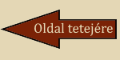

A fuvola mai formája Theobald Böhm német fuvolakészítő 1832-ben megkezdett munkásságának eredménye. A lyukakat pontosan a hangok tiszta megszólaltatásának megfelelően helyezte el, ami nem egyezett szükségképp az ujjakkal fedhető helyzettel. A hangerő növelése érdekében megnövelte a hanglyukakat, és a játék megkönnyítésére billentyűrendszert dolgozott ki. A belül kúpalakú fejtől eltekintve - a telt és világos hangzás érdekében - henger alakú formát adott a fuvolának. Bár eleinte a többi fafúvóshoz hasonlóan fából készítették, ma már 65-70 cm hosszú, fémből készült hangszer. A mesterhangszerek gyakran valamilyen ezüstötvözetből, sőt színezüstből vagy színaranyból készülnek. Mély hangjai halkan szólalnak meg, középen kitűnő dallamjátszó hangszer, felső hangjai pedig áthatóak és fényesek. Ez a legfürgébbnek tartott fafúvós.
Furata kúpalakú, hangteste leggyakrabban keményfából (puszpáng-, ében-, illetve vadkörtefából) készül, enyhén szélesedő tölcsérrel. Hangjának jellegzetes színét az adja, hogy a levegő egy nádból készült fúvókán át jut a hangszer testébe. A fúvóka két, egymással szembe fordított nádnyelvből áll. A két nyelv között nagyon kicsi rés keletkezik, ezen kell átpréselni a játékosnak a levegőt. Fizikai értelemben ez az oboajáték legnehezebb és legfárasztóbb része. Az oboa szólamának kialakításakor arra is ügyelnie kell a zeneszerzőnek, hogy a játékosnak legyen ideje pihenni.
A klarinét körülbelül 70-80 cm hosszú, általában puszpáng- vagy ébenfából készült hangszer. Az alsó végén tölcséralakban kiszélesedik, ami hangfogóul szolgál, míg felső végére szimpla nádnyelvet tartalmazó fúvóka illeszkedik. A nád rezgése adja meg a klarinét hangjának alaptónusát. Általában 13 hangnyílással van ellátva, amelyek közül nyolcat a játékos az ujjaival fog be, míg a többit a billentyűk segítségével tud kinyitni, illetve befedni. A hangszer megfújása viszonylag könnyű, de a hangszer szerkezete, billentyűrendszere rendkívül bonyolult. A fogások megtalálása hosszas gyakorlást igényel, de az összetett mechanika nagyon fürge, mozgékony játékra ad lehetőséget. A klarinét gyorsasága megközelíti a fuvoláét. Hangterjedelme óriási. Éppen ezért képes kísérő feladatok ellátására, de akár nagy ívű melódiák megszólaltatására is.
Eredete a többi fafúvós társáétól eltérően nem ókori gyökerekre vezethető vissza, kialakulásáig "csupán" kb. 150 évet kell visszautaznunk a múltban. Így a szaxofon az egyik legújabb a hangszerek birodalmában. A szaxofon egyesíti magában a fuvola oktávoló rendszerét a klarinét fújástechnikájával. A fogáshelyek - éppúgy, mint a fuvolán - mindkét oktávban ugyanott vannak, ami mérhetetlenül könnyebbé teszi a klarinétnál, a náddal való megszólaltatás viszont a klarinét könnyebbsége a fuvolával szemben. Másik oka a kedveltségének a gyönyörű hangszíne, amely bizonyos mértékig a klarinétra emlékeztet, ám ennél egy kicsit ércesebb, és rendkívül gördülékeny lágysággal is megszólaltatható. A szaxofon úgynevezett nyelvsípos, keverék fafúvós hangszer: az oboa kúpalakú furatához a klarinét szimplanádas fúvókáját társítja. Annak ellenére, hogy rézből készül, fogástechnikája folytán a fafúvósok családjához szokták sorolni.
A fagott neve az olasz fagotto szóból származik, ami fanyalábot jelent, mivel szétszedhető hangszerről van szó, és részei egymás mellett egy fanyalábhoz hasonlítanak. Kitalálója Afranio kanonikus volt a XV. század Ferrarájában. Mint ahogy a megszólaltatása, a fagott készítése sem egyszerű folyamat. Közel három méter hosszú csövét, amely általában juharfából készül, U-alakban meghajlítják, mégpedig úgy, hogy az egyik szárny hosszabb legyen a másiknál. A hangszer tölcsére a hosszabbik szárny végén található és felfelé néz. Egy S-alakú vékony fémcső merőlegesen csatlakozik a rövidebbik szárny felső végéhez. Ehhez a fémcsőhöz illeszkedik a kettős nádnyelv, amely ugyanolyan, mint az oboa kettős nyelve, csak valamivel nagyobb nála. Valójában ez a hangszer nem más, mint az oboának a basszusa. A modern billentyűrendszereknek és egyéb módosításoknak nem sikerült megőrizniük a fagott különleges hangzását, ráadásul játékmódja így is elég kényelmetlen maradt.